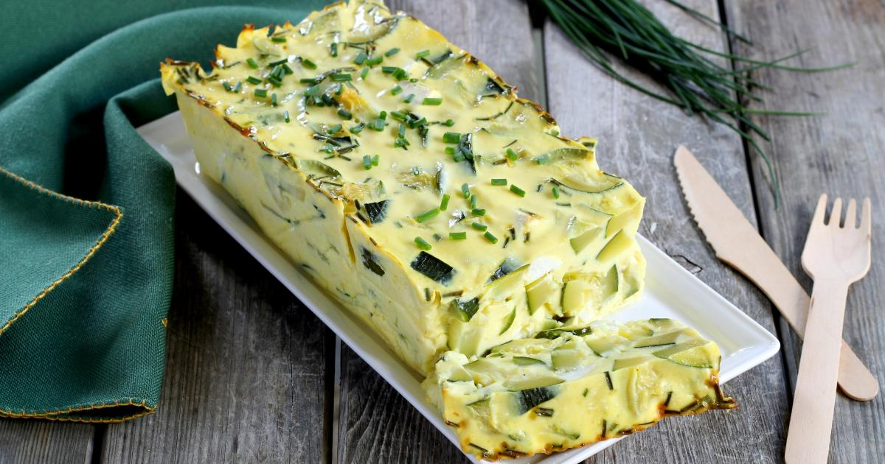
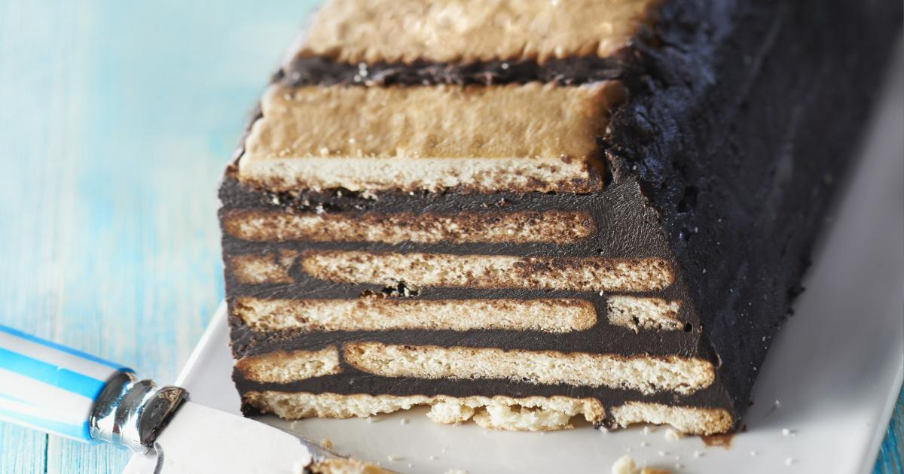
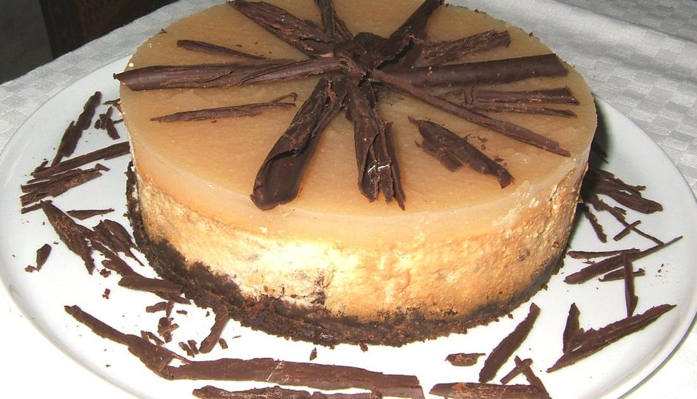
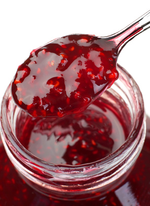
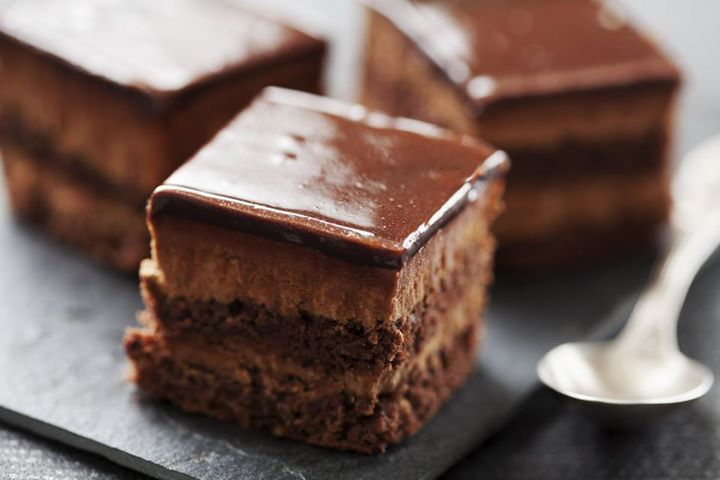

Photo gallery
2021.03.31 14:52







- Accueil - Président
Salade de lentilles, carotte, feta et oeuf mollet. 0/5 (0 avis) Tartare de saumon et sa salade de lentilles (17ème rencontre) 4.9/5 (73 avis) Sauce légère pour salades et crudités. 4.8/5 ... Soif de recettes ? On se donne rendez-vous dans votre boîte mail ! Découvrir nos newsletters. - Salade : nos délicieuses recettes de salade
Du fromage, du beurre, de la crème Président c'est la marque qui vous offre toutes les recettes pour prendre la vie côté plaisir. - Recettes de cuisine Les Foodies - Les meilleures recettes ...
Accueil > Recettes > Salade de brocolis. Salade de brocolis. 4.6/5. 18 commentaires. 1/3. 15 min très facile bon marché. Partager Ajouter au ... - LES MEILLEURES RECETTES DE CAROTTE
De délicieuses recettes de salade de pommes de terre : les 12 recettes coup de cœur, rigoureusement sélectionnées par Chef Damien et Chef Christophe. - Recettes de pommes de terre au four | La sélection de 750g
La recette de salade de crevettes est simple et délicieuse, merci. Répondre. Ange marie. 28 mai 2020 à 11 h 46 min . J ai adore c est très rafraîchissant. Manon. 24 mai 2019 à 11 h 04 min . ... Recettes secrètes, recettes faciles, recettes de fast food, recettes du Québec et plein de bacon! - Recettes faciles en photos | Supertoinette
Près de 10 000 recettes de cuisine déposées par les internautes. Venez les découvrir! - Recette facile de salade de crevettes! - Le Chef Cuisto
- faut il mettre du sucre dans la salade de carottes. Merci ( Répondre ) - bonjour, comment conserver les carottes et les choux fleurs ( Répondre ) - Peut on congeler des carottes cuite ou non ( Répondre ) - gratin de lègumes (céleri, poireaux, carottes, pomme de terre ) ( Répondre ) - Bonsoir Combien de temps pour la stérilisation des ... - Salade de brocolis : Recette de Salade de brocolis - Marmiton
Recettes-de-chefs.ca contient des recettes des meilleurs chefs du Québec - Les meilleures recettes de chefs du Québec | Recettes-de ...
Toutes les recettes de cuisine facile de Supertoinette, illustrées pas à pas, testées et garanties délicieuses. Supertoinette, recettes de cuisine faciles ... Salade fraîcheur de printemps. Voici une petite recette gourmande de salade composée, qui nous annonce le printemps ! Simple et rapide à préparer, elle vous charmera par son mélange. - De délicieuses recettes de salade de pommes de terre | La ...
Les pommes de terre au four, c'est simple mais tellement bon. La cuisson se fait le plus souvent en deux temps. Faites cuire vos pommes de terre entières après les avoir piquées de quelques coups de fourchette pendant une heure à 200°C. Fendez-les en deux, retirez la chair, mélangez-la à des herbes, du saumon fumé, du jambon, etc. Placez la garniture dans les coques de pommes de terre ...